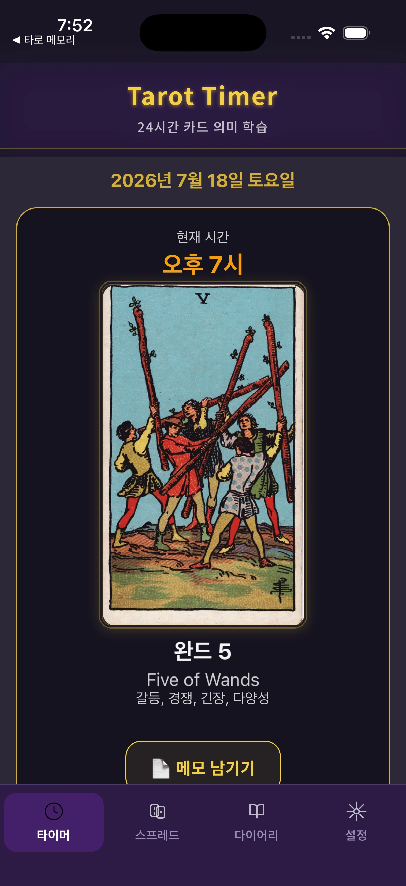

A 24-hour tarot timer
Meet a new card each hour and receive optional reminders without losing the rhythm of your day.
24-hour tarot learning · iOS + Android
Learn tarot card meanings through the hour you are living—then keep your notes, spreads, and tarot diary connected in one place.

What makes it different
Tarot Timer is a tarot card learning app built around a 24-hour rhythm. Instead of trying to memorize all 78 cards at once, you meet a card in context, read its meaning, and connect it to your own day.
Meet a new card each hour and receive optional reminders without losing the rhythm of your day.
Study Major and Minor Arcana meanings, symbols, keywords, and upright or reversed interpretations.
Use one-card and multi-card tarot spreads, then save the question, positions, cards, and interpretation together.
Keep hourly notes and diary entries so repeated cards, emotions, and personal patterns become easier to notice.
Frequently asked questions
Yes. Card meanings and keywords are included, so you can learn tarot one card and one lived example at a time.
It can support personal reflection, but its main purpose is tarot education: learning card meanings through hourly repetition, notes, spreads, and review.
Yes. Tarot Timer includes the 22 Major Arcana and 56 Minor Arcana cards.
Tarot Timer is available on the Apple App Store and Google Play for iOS and Android.